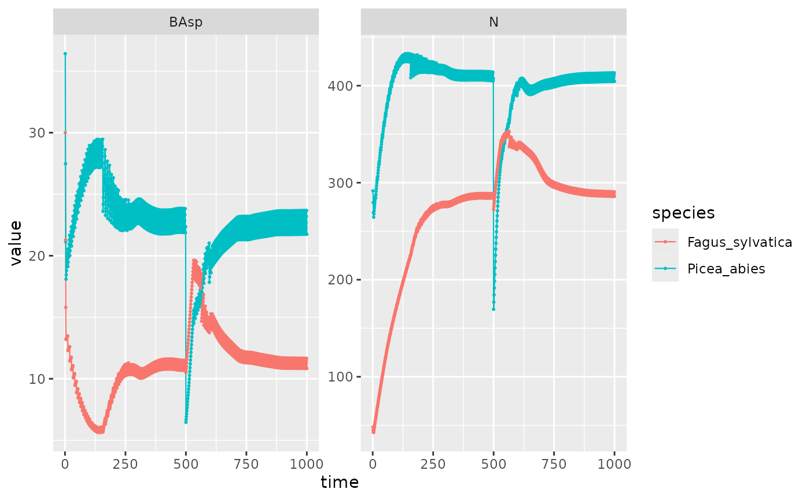

This vignette illustrates how to use disturbance scenarii with matreex package. A disturbance scenario provides the timing and intensity at which different types of disturbance (storm, fire and biotic) will affect tree mortality in each size class. The tree killed by the disturbance are saved within the harvested output.
The basic matreex functions are shown in a previous introduction vignette.
Simulations input
Define a species
The first step is the IPM integration and species object creation. This part is common with basic usage of the package, so nothing is very important here.
Please keep in mind this computation is intensive and may take few minutes !
library(matreex)
library(dplyr)
#>
#> Attaching package: 'dplyr'
#> The following objects are masked from 'package:stats':
#>
#> filter, lag
#> The following objects are masked from 'package:base':
#>
#> intersect, setdiff, setequal, union
library(ggplot2)
# Load fitted model for a species
# fit_species # list of all species in dataset
data("fit_Picea_abies")
# Load associated climate
data("climate_species")
climate <- subset(climate_species, N == 2 & sp == "Picea_abies", select = -sp)
# see ?climate_species to understand the filtering of N.
climate
#> sgdd wai sgddb waib wai2 sgdd2 PC1
#> 62 1444.667 0.4519387 0.0006922012 0.6887343 0.2042486 2087062 1.671498
#> PC2 N SDM
#> 62 0.02602064 2 0.6760556
Picea_ipm <- make_IPM(
species = "Picea_abies",
climate = climate,
fit = fit_Picea_abies,
clim_lab = "optimum clim",
mesh = c(m = 700, L = 90, U = get_maxdbh(fit_Picea_abies) * 1.1),
BA = 0:70, # Default values are 0:200, smaller values speed up this vignette.
verbose = TRUE
)
#> Launching integration loop
#> GL integration occur on 32 cells
#> midbin integration occur on 25 cells
#> Loop done.
#> Time difference of 48.5 secsLatter simulations will start at equilibrium, so we compute this
before anything. Picea_equil is the equilibrium
distribution after 2500 years.
Picea_sp <- species(IPM = Picea_ipm, init_pop = def_initBA(40))
Picea_for <- forest(species = list(Picea = Picea_sp))
set.seed(42)
Picea_sim <- sim_deter_forest(Picea_for, tlim = 2500,
equil_dist = 250, equil_time = 2500,
verbose = TRUE)
#> Starting while loop. Maximum t = 2500
#> time 500 | BA diff : 15.07
#> time 1000 | BA diff : 6.33
#> time 1500 | BA diff : 2.80
#> time 2000 | BA diff : 1.25
#> time 2500 | BA diff : 0.56
#> Simulation ended after time 2500
#> BA stabilized at 36.43 with diff of 0.56 at time 2500
#> Time difference of 14.7 secs
Picea_equil <- filter(Picea_sim, var == "n", equil) %>% pull(value)Disturbance
Definition of disturbance
We define a disturbance by few parameters used later in the formula. Details on the model definition and dataset used can be found in Barrere et al. (2023).
The calibration of the equations of disturbance mortality implemented in the package is described in details in Barrere et al. (2023). We characterize a disturbance in the simulations with two variables:
\(I\), its intensity between 0 and 1.
\(type\), the class of disturbance. This is a label in
"storm","fire"and"biotic". This is used to filter species parameters fitted, which were estimated separately for each disturbance type.
These variables are set in a data.frame object. A last column named IsSurv is used to inform whether the survival part of the IPM (competition-induced mortality) is needed during a disturbance. In Barrere et al. (2023), the model does not differentiate disturbance mortality and background mortality. Therefore, we recommend to deactivate baseline mortality to avoid an overestimation of mortality.
ex_disturb <- data.frame(type = "storm", intensity = 0.5, IsSurv = FALSE)Impact on population
The disturbance impact on the population is calculated from parameters estimated in Barrere et al. (2023). The disturbance mortality equation takes the size distribution, quadratic diameter of the species, intensity (\(I\)) and duration (\(t\)) of the disturbance as inputs. A set of parameters is associated to each type of disturbance and species. This is computed with the following equations:
\[ dqm = \sqrt{\frac{\sum_{i=1}^m dbh_i^2 \times n_i}{\sum_{i=1}^m n_i}} \\ \] where \(dqm\) is the quadratic diameter, \(m\) is the number of size classes, and \(n_i\) is the number of trees in the size class and \(dbh_i\) is the mean diameter of the size class (in the model the number of trees is a continuous density per area).
\[ logratio_i = log(\frac{dbh_i}{dqm}) \\ \] In the original model fitted in Barrere et al. (2023), \(logratio\) and \(dbh\) were centered and scaled. The linear parameters \(logratio.intercept\), \(logratio.slope\), \(dbh.intercept\) and dbh.slope$ are used to apply the same transformation for these two variables: \[ dbh.scaled_i = dbh.intercept + dbh_i \times dbh.slope \\ \] \[ logratio.scaled_i = logratio.intercept + logratio_i \times logratio.slope \\ \] \[ Pdeath_{i,t} = 1- (1 - logist(a_0 + a_1 \times logratio.scaled_i + b \times I*dbh.scaled^{c }))^t \]
Where, \(Pdeath_{i,t}\) is the disturbance probability of mortality over \(t\) years of the individual \(i\), of dbh \(dbh_i\). The parameters are estimated with Bayesian computations. The mean of all posterior estimations are stored inside the package for each combination of species and disturbance type.
(Picea_coefs <- filter(matreex::disturb_coef, species == "Picea_abies"))
#> disturbance species a0 a1 b c
#> 1 biotic Picea_abies -5.635219 0.0000000 5.832025 -0.08002929
#> 2 storm Picea_abies -4.628462 -0.1402871 5.409031 0.00142451
#> dbh.intercept dbh.slope logratio.intercept logratio.slope
#> 1 -0.7870239 0.007930586 -0.14791154 3.067571
#> 2 -0.7219773 0.007283356 -0.09485699 2.831488
Picea_sp$disturb_coef <- Picea_coefsAlong with this set of parameters, we need to provide a disturbance function to the species we want to simulate. The species is initiated with a default empty function that will throw warnings. The function also require the quadratic mean diameter of the population.
Below is an example of the difference in size distribution before and
after a disturbance of type "storm" and intensity
0.7.
#' Disturbance function
matreex::disturb_fun
#> function (x, species, disturb = NULL, ...)
#> {
#> dots <- list(...)
#> qmd <- dots$qmd
#> size <- species$IPM$mesh
#> coef <- species$disturb_coef
#> disturbance <- NULL
#> if (any(disturb$type %in% coef$disturbance)) {
#> coef <- subset(coef, disturbance == disturb$type)
#> }
#> else {
#> stop(sprintf("The species %s miss this disturbance type (%s) parameters",
#> sp_name(species), disturb$type))
#> }
#> size[size == 0] <- min(size[size != 0])
#> logratio <- log(size/qmd)
#> dbh.scaled = coef$dbh.intercept + size * coef$dbh.slope
#> logratio.scaled = coef$logratio.intercept + logratio * coef$logratio.slope
#> Pkill <- plogis(coef$a0 + coef$a1 * logratio.scaled + coef$b *
#> disturb$intensity^(coef$c * dbh.scaled))
#> return(x * Pkill)
#> }
#> <bytecode: 0x55907a9c9c60>
#> <environment: namespace:matreex>
Picea_sp$disturb_fun <- disturb_funAny user can define the disturb_fun() function they need
and provide parameters for the wanted species. Obviously, this type of
modification have not been thoroughly tested and thus is more prone to
error so don’t hesitate to contact matreex maintainer in
this eventuality.
Simulations
Running a simulation takes the same parameters as usual, with an added data.frame with disturbance along time. We will start from equilibrium and have a disturbance after 100 years.
disturb <- data.frame(type = "storm", intensity = 0.2, IsSurv = FALSE, t = 100)Disturbance size distribution is saved in harvest output. Harvest and basal mortality are canceled when a disturbance happens.
Picea_sp$init_pop <- def_init_k(Picea_equil)
disturb_picea <- sim_deter_forest(
forest(species = list(Picea = Picea_sp)),
tlim = 1000, equil_dist = 250, equil_time = 1000,
disturbance = disturb, # providing disturbance table
verbose = TRUE)
#> Starting while loop. Maximum t = 1000
#> time 100 | Disturbance : storm I = 0.20
#> time 500 | BA diff : 21.42
#> time 1000 | BA diff : 9.29
#> Simulation ended after time 1000
#> BA stabilized at 40.57 with diff of 9.29 at time 1000
#> Time difference of 5.59 secs
disturb_picea %>%
filter(var %in% c("BAsp", "H"), ! equil, value != 0) %>%
ggplot(aes(x = time, y = value)) +
facet_wrap(~ var, scales = "free_y") +
geom_line(linewidth = .4) + geom_point(size = .4)Multispecific simulations
Plurispecific simulations are performed by creating species object and attributing disturbance function to each species individually as previously illustrated. The disturbance dataframe is common to all species included in the simulations. We also change the harvesting model to illustrate other kind of simulations.
data("fit_Fagus_sylvatica")
Fagus_ipm <- make_IPM(
species = "Fagus_sylvatica",
climate = climate,
fit = fit_Fagus_sylvatica,
clim_lab = "optimum clim",
mesh = c(m = 700, L = 90, U = get_maxdbh(fit_Fagus_sylvatica) * 1.1),
BA = 0:70,
verbose = TRUE
)
#> Launching integration loop
#> GL integration occur on 21 cells
#> midbin integration occur on 25 cells
#> Loop done.
#> Time difference of 26.3 secs
Fagus_sp <- species(
IPM = Fagus_ipm, init_pop = def_initBA(30),
disturb_fun = disturb_fun,
harvest_fun = Uneven_harv,
disturb_coef = filter(matreex::disturb_coef, species == "Fagus_sylvatica")
)
time <- 1500
disturb <- data.frame(type = "storm", intensity = 0.2, IsSurv = FALSE, t = 500)
Picea_sp$harvest_fun <- Uneven_harv
set.seed(42)
disturb_PiFa <- sim_deter_forest(
forest(species = list(Picea = Picea_sp, Fagus = Fagus_sp),
harv_rules = c(Pmax = 0.25, dBAmin = 3, freq = 10, alpha = 1)),
tlim = 1000, equil_dist = 250, equil_time = 1000,
disturbance = disturb,
harvest = "Uneven", targetBA = 30,
verbose = TRUE, correction = "cut")
#> apply a IPM cut correction
#> Starting while loop. Maximum t = 1000
#> time 500 | Disturbance : storm I = 0.20
#> time 500 | BA diff : 19.10
#> time 1000 | BA diff : 6.46
#> Simulation ended after time 1000
#> BA stabilized at 32.29 with diff of 6.46 at time 1000
#> Time difference of 9.64 secs
disturb_PiFa %>%
filter(var %in% c("BAsp", "H"), time > 450 & time < 600, ! equil) %>%
ggplot(aes(x = time, y = value, color = species)) +
facet_wrap(~ var, scales = "free_y") +
geom_line(linewidth = .4) + geom_point(size = .4)Linear stabilizing effect of species mixture
When simulating the effect of biotic disturbances on forests mixing coniferous and broadleaf species, an additional effect can be taken into account based on the survival models developed by Brandl et al. (2020). This mixture effect is a linear function, and the mean of the function has been scaled to match the average mortality disturbance estimated by Barrere et al. (2023) for the average share of conifers in the fitting data.
To include this effect, the probability of disturbance mortality is multiplied by the linear function linking the share of conifer to biotic mortality.
\[ f_{mixture.effect}\left(share.conifers\right) = 0.4767 + 0.6015 \cdot share.conifers \\ \] \[ Pdeath_{new}\left(share.conifers\right) = Pdeath_{disturb} \cdot f_{mixture.effect}\left(share.conifers\right) \]
To compute the share of conifers, the type (broadleaf or conifer) of each species needs to be set as shown below. This can be set when creating the species object or edited later :
Picea_sp$info["type"]
#> type
#> "Undefined"
Picea_sp$info["type"] <- "Coniferous"
Fagus_sp$info["type"] <- "Broadleaf"An alternative disturbance function is provided by the package as
disturb_fun_mixt(), to accept the input of the coniferous
percentage computed at the plot scale before disturbing each species and
to modify the mortality probability (Pkill) if the species
is a coniferous.
matreex::disturb_fun_mixt
#> function (x, species, disturb = NULL, ...)
#> {
#> dots <- list(...)
#> qmd <- dots$qmd
#> coni_perc <- dots$perc_coni
#> size <- species$IPM$mesh
#> coef <- species$disturb_coef
#> disturbance <- NULL
#> if (any(disturb$type %in% coef$disturbance)) {
#> coef <- subset(coef, disturbance == disturb$type)
#> }
#> else {
#> stop(sprintf("The species %s miss this disturbance type (%s) parameters",
#> sp_name(species), disturb$type))
#> }
#> size[size == 0] <- min(size[size != 0])
#> logratio <- log(size/qmd)
#> dbh.scaled = coef$dbh.intercept + size * coef$dbh.slope
#> logratio.scaled = coef$logratio.intercept + logratio * coef$logratio.slope
#> Pkill <- plogis(coef$a0 + coef$a1 * logratio.scaled + coef$b *
#> disturb$intensity^(coef$c * dbh.scaled))
#> if (species$info["type"] == "Coniferous" && disturb$type ==
#> "biotic") {
#> message(sprintf("sp : %s | coni : %.3f | modif : %.2f",
#> species$info["species"], coni_perc, (0.4767 + 0.6015 *
#> coni_perc)))
#> Pkill <- Pkill * (0.4767 + 0.6015 * coni_perc)
#> }
#> Pkill <- pmin(Pkill, 1)
#> return(x * Pkill)
#> }
#> <bytecode: 0x559075506180>
#> <environment: namespace:matreex>
# Giving the new disturb_fun
Picea_sp$disturb_fun <- disturb_fun_mixt
Fagus_sp$disturb_fun <- disturb_fun_mixtThis is an example simulation. Note that it is imperative to apply this mixture effect with biotic disturbance types only, since this effect was only calibrated for biotic mortality.
disturb <- data.frame(type = "biotic", intensity = 0.2, IsSurv = FALSE, t = 500)
set.seed(42)
mixture_PiFa <- sim_deter_forest(
forest(species = list(Picea = Picea_sp, Fagus = Fagus_sp)),
tlim = 1000, equil_dist = 250, equil_time = 1000,
disturbance = disturb,
harvest = "Uneven", targetBA = 30,
verbose = TRUE, correction = "cut")
#> apply a IPM cut correction
#> Starting while loop. Maximum t = 1000
#> time 500 | Disturbance : biotic I = 0.20
#> sp : Picea_abies | coni : 0.588 | modif : 0.83
#> time 500 | BA diff : 18.84
#> time 1000 | BA diff : 2.82
#> Simulation ended after time 1000
#> BA stabilized at 32.58 with diff of 2.82 at time 1000
#> Time difference of 10.7 secs
mixture_PiFa %>%
filter(var %in% c("BAsp", "N"), ! equil) %>%
ggplot(aes(x = time, y = value, color = species)) +
facet_wrap(~ var, scales = "free_y") +
geom_line(linewidth = .4) + geom_point(size = .4)
I compare the two simulations in order to check the presence of a mixture effect. As seen above in messages, the mortality is multiplied by 0.74, which we see here with the blue line under the red one for Picea abies.
Yes, the disturbance mortality is saved in the harvest variable since there is no harvest when there is a disturbance.
bind_rows(mixture = mixture_PiFa, basic = disturb_PiFa, .id = "jasper") %>%
filter(var == "h", time == 500) %>%
ggplot(aes(x = mesh, y = value, color = jasper)) +
facet_wrap(~ species, scales = "free_y") +
geom_line(linewidth = .4) + geom_point(size = .4)